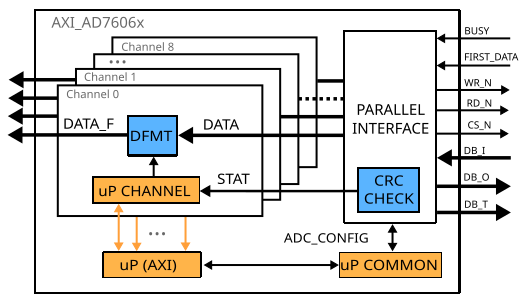
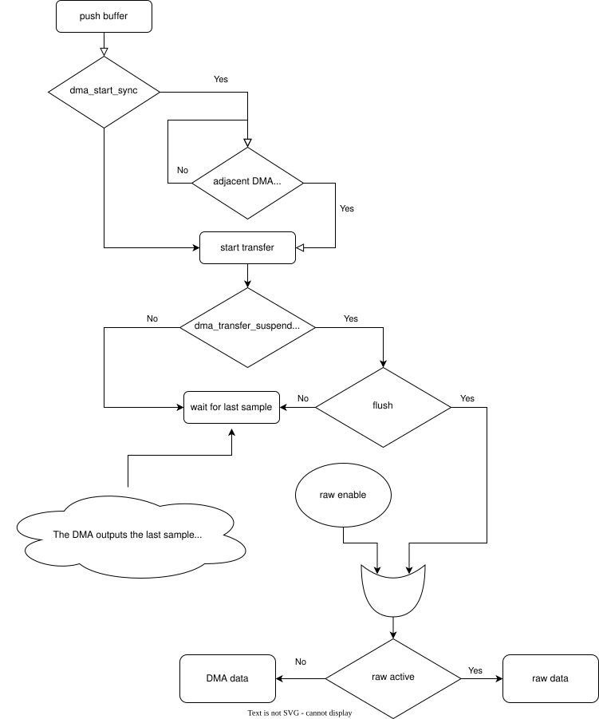

AXI DAC Interpolate
The AXI DAC Interpolate IP core allows interpolation of the input data by 10/100/1000/10000/100000, with filtering and arbitrary zero-hold interpolation.
More about the generic framework interfacing DACs can be read here at Generic AXI DAC.
Features
AXI Lite control/status interface
Allows interpolation by 10/100/1000/10000/100000 with filtering
Allows arbitrary zero-hold interpolation
Filtering is implemented by a 6-section CIC programmable rate filter and a compensation FIR filter.
Files
Name |
Description |
|---|---|
Verilog source for the peripheral. |
Block Diagram

Configuration Parameters
Name |
Description |
Default Value |
Choices/Range |
|---|---|---|---|
CORRECTION_DISABLE |
Disable scale correction of the CIC output. |
1 |
Interface
Physical Port |
Logical Port |
Direction |
Dependency |
|---|---|---|---|
s_axi_awaddr |
AWADDR |
in [6:0] |
|
s_axi_awprot |
AWPROT |
in [2:0] |
|
s_axi_awvalid |
AWVALID |
in |
|
s_axi_awready |
AWREADY |
out |
|
s_axi_wdata |
WDATA |
in [31:0] |
|
s_axi_wstrb |
WSTRB |
in [3:0] |
|
s_axi_wvalid |
WVALID |
in |
|
s_axi_wready |
WREADY |
out |
|
s_axi_bresp |
BRESP |
out [1:0] |
|
s_axi_bvalid |
BVALID |
out |
|
s_axi_bready |
BREADY |
in |
|
s_axi_araddr |
ARADDR |
in [6:0] |
|
s_axi_arprot |
ARPROT |
in [2:0] |
|
s_axi_arvalid |
ARVALID |
in |
|
s_axi_arready |
ARREADY |
out |
|
s_axi_rdata |
RDATA |
out [31:0] |
|
s_axi_rresp |
RRESP |
out [1:0] |
|
s_axi_rvalid |
RVALID |
out |
|
s_axi_rready |
RREADY |
in |
Physical Port |
Logical Port |
Direction |
Dependency |
|---|---|---|---|
s_axi_aclk |
CLK |
in |
Physical Port |
Logical Port |
Direction |
Dependency |
|---|---|---|---|
s_axi_aresetn |
RST |
in |
Physical Port |
Logical Port |
Direction |
Dependency |
|---|---|---|---|
dac_clk |
CLK |
in |
Physical Port |
Logical Port |
Direction |
Dependency |
|---|---|---|---|
dac_rst |
RST |
in |
Physical Port |
Direction |
Dependency |
Description |
|---|---|---|---|
dac_data_a |
in [15:0] |
Analog data for channel A. |
|
dac_data_b |
in [15:0] |
Analog data for channel B. |
|
dac_valid_a |
in |
Data valid signal for channel A. |
|
dac_valid_b |
in |
Data valid signal for channel B. |
|
dma_valid_a |
in |
||
dma_valid_b |
in |
||
dma_ready_a |
out |
||
dma_ready_b |
out |
||
last_a |
in |
||
last_b |
in |
||
dac_enable_a |
in |
||
dac_enable_b |
in |
||
dac_int_data_a |
out [15:0] |
Decimated data for channel A. |
|
dac_int_data_b |
out [15:0] |
Decimated data for channel B. |
|
dac_valid_out_a |
out |
Data valid for channel A. |
|
dac_valid_out_b |
out |
Data valid for channel B. |
|
underflow |
out |
||
trigger_i |
in [1:0] |
External trigger pins. |
|
trigger_adc |
in |
ADC trigger. |
|
trigger_la |
in |
Logic analyzer trigger. |
Detailed Description
For some applications, the maximum sampling rate of the DAC is too high and leads to bad utilization of the memory or USB bandwidth. To avoid it, the interpolation IP can be used.
The interpolation block allows interpolation by 10, 100, 1000, 10000,100000 with filtering. The filtering is implemented using an FIR compensation filter (interpolation by 2) for the CIC and a 6-stage CIC interpolation filter allowing interpolation by 5/50/500/5000/50000.
At the end of the filter blocks, there is an arbitrary interpolation zero-order hold block which holds the value for a configurable number of samples.
The axi_dac_interpolate also controls the data flow, being the middle man between AXI AD9963: as the main data flow controller (consumer) and the DMA, a subordinate in the path. This control is done through registers:
0x50 FLAGS - Control flags
0x60 TRIGGER_CONFIG - Trigger configuration
0x64 RAW_CHANNEL_DATA - Raw data to transmit
The actual control consists in fetching data from the DMA:
at a desired rate
at a new transfer, waiting until the other channel DMA has valid DATA or waiting for an external trigger
pausing/stopping the transfer at user request through remap or external trigger
If the DMA is stopped through the axi_dac_interpolate (dma_transfer_suspend or external trigger) and not by disabling the DMA from it’s register map, the DAC data path will keep a few residual samples in the DMA’s pipes. These samples will be the first samples to be transferred when a new buffer is pushed. To avoid it, one can use the DMA flush feature which clears the DMA when stopped by the consumer.
By default, the flush flag is active. It should be disabled only if the user wants a “pause” functionality. Meaning, the transfer is stopped on an event and then on another event, the transfer will continue from the same point without having to create a new buffer. The event can be setting/clearing the dma_transfer_suspend or an external trigger.
Another feature is the stop_sync. There is only one use case for it. Stopping the other channel (configured at a different rate and/or in cyclic mode) when the first channel (DMA) finishes the transfer of a non-cyclic buffer.
The RAW transfer feature enables the user to transfer data (written into a register inside the axi_dac_interpolate) without needing DMA (buffer) config (delays).
For more info, check the state machine below.

Register Map
Address |
Reg Name |
|||||
|---|---|---|---|---|---|---|
HDL |
DWORD |
BITS |
Field Name |
Type |
Default Value |
Description |
0x0 |
0x0 |
VERSION |
Version of the peripheral. Follows semantic versioning. Current version 2.3.0. |
|||
[31:16] |
VERSION_MAJOR |
RO |
0x0002 |
|||
[15:8] |
VERSION_MINOR |
RO |
0x05 |
|||
[7:0] |
VERSION_PATCH |
RO |
0x00 |
|||
0x1 |
0x4 |
SCRATCH |
Scratch Register |
|||
[31:0] |
SCRATCH |
RW |
Scratch register useful for debug. |
|||
0x10 |
0x40 |
ARBITRARY_INTERPOLATION_RATIO_A |
Control Arbitrary Interpolation Ratio for Channel A |
|||
[31:0] |
FILTERED_INTERPOLATION |
RW |
Set the arbitrary zero-order hold interpolation ratio at the end of the interpolation chain |
|||
0x11 |
0x44 |
INTERPOLATION_RATIO_A |
Control Filtered Interpolation for Channel A |
|||
[2:0] |
FILTERED_INTERPOLATION |
RW |
|
|||
0x12 |
0x48 |
ARBITRARY_INTERPOLATION_RATIO_B |
Control Arbitrary Interpolation Ratio for Channel B |
|||
[31:0] |
FILTERED_INTERPOLATION |
RW |
Set the arbitrary zero-order hold interpolation ratio at the end of the interpolation chain |
|||
0x13 |
0x4c |
INTERPOLATION_RATIO_B |
Control Filtered Interpolation for Channel B |
|||
[2:0] |
FILTERED_INTERPOLATION |
RW |
Enables the filtered interpolation: 0: No filtered interpolation 1: Interpolation by 10. Result should be corrected by a 1.531 factor 2: Interpolation by 100. Result should be corrected by a 1.168 factor 3: Interpolation by 1000. Result should be corrected by a 1.783 factor 6: Interpolation by 10000. Result should be corrected by a 1.360 factor 7: Interpolation by 100000. Result should be corrected by a 1.038 factor default: No filtered interpolation |
|||
0x14 |
0x50 |
FLAGS |
Control Flags |
|||
[0] |
SUSPEND_TRANSFER |
RW |
If set to 1, the interpolation filters are in reset and no data is requested from the DMA. Can be used to synchronize data transfer from two different DMAs. |
|||
0x15 |
0x54 |
CONFIG |
Configuration Register |
|||
[1] |
CORRECTION_ENABLE_B |
RW |
If set to 1, correction is enabled on channel B. The input data will be multiplied with the value from the CORRECTION_COEFFICIENT_B register. |
|||
[0] |
CORRECTION_ENABLE_A |
RW |
If set to 1, correction is enabled on channel A. The input data will be multiplied with the value from the CORRECTION_COEFFICIENT_A register. |
|||
0x16 |
0x58 |
CORRECTION_COEFFICIENT_A |
Correction Coefficient A |
|||
[15:0] |
CORRECTION_COEFFICIENT |
RW |
Scale correction (if equipped) coefficient for channel A. The format is 1.1.14 (sign, integer and fractional bits). Allows for correction of the CIC filter amplification. |
|||
0x17 |
0x5c |
CORRECTION_COEFFICIENT_B |
Correction Coefficient B |
|||
[15:0] |
CORRECTION_COEFFICIENT |
RW |
Scale correction (if equipped) coefficient for channel B. The format is 1.1.14 (sign, integer and fractional bits). Allows for correction of the CIC filter amplification. |
|||
0x18 |
0x60 |
TRIGGER_CONFIG |
Trigger configuration |
|||
[20] |
AUTO_REARM_TRIGGER |
RW |
Rearms the trigger on the last(sample) signal of the DMA(per DAC channel) |
|||
[19] |
EN_TRIGGER_LA |
RW |
Enable trigger from Logic Analyzer |
|||
[18] |
EN_TRIGGER_ADC |
RW |
Enable trigger from ADC |
|||
[17] |
EN_TRIGGER_TO |
RW |
Enable trigger from To |
|||
[16] |
EN_TRIGGER_TI |
RW |
Enable trigger from Ti |
|||
[9:8] |
FALL_EDGE |
RW |
Falling edge triggering for TRIGGER[0](Ti) or TRIGGER[1](To) pin |
|||
[7:6] |
RISE_EDGE |
RW |
Rising edge triggering for TRIGGER[0](Ti) or TRIGGER[1](To) pin |
|||
[5:4] |
ANY_EDGE |
RW |
Any edge triggering for TRIGGER[0](Ti) or TRIGGER[1](To) pin |
|||
[3:2] |
HIGH_LEVEL |
RW |
High level triggering for TRIGGER[0](Ti) or TRIGGER[1](To) pin |
|||
[1:0] |
LOW_LEVEL |
RW |
Low level triggering for TRIGGER[0](Ti) or TRIGGER[1](To) pin |
|||
Access Type |
Name |
Description |
|---|---|---|
RO |
Read-only |
Reads will return the current register value. Writes have no effect. |
RW |
Read-write |
Reads will return the current register value. Writes will change the current register value. |